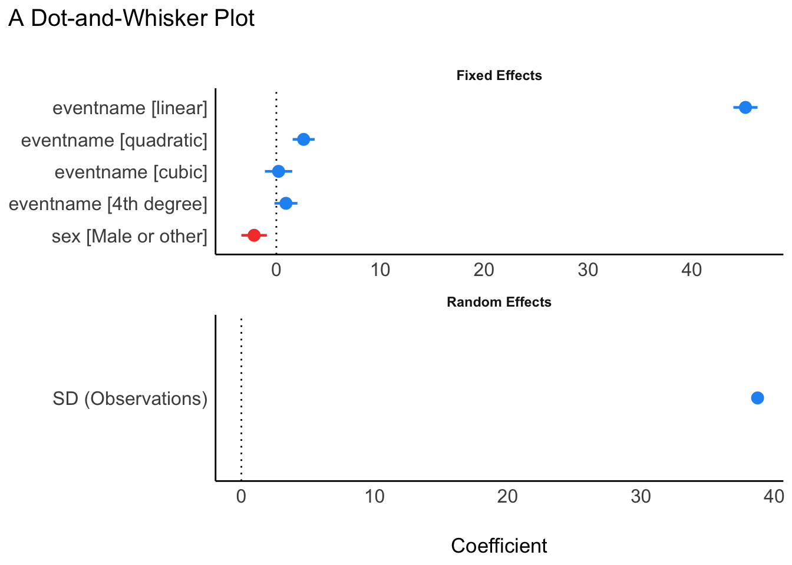
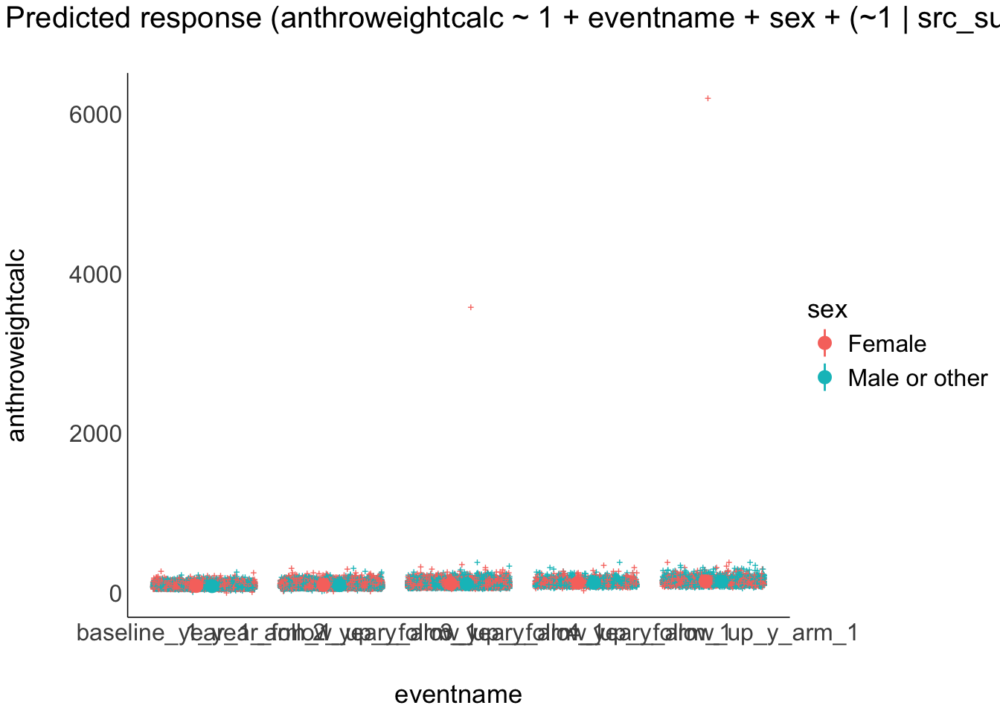
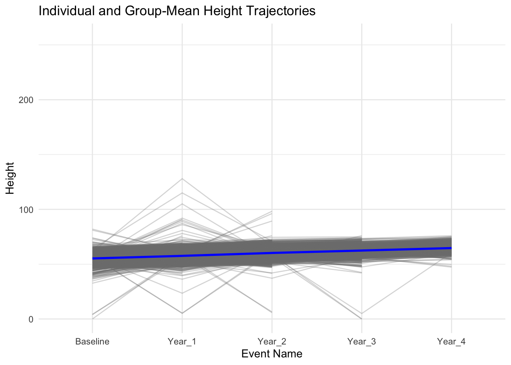

# Create a list of required packages
packages_required <- c("tidyverse","easystats","lme4","gtsummary","report","broom","gridExtra")
# Check which packages are not installed and install them
packages_to_install <- setdiff(packages_required, rownames(installed.packages()))
if (length(packages_to_install) > 0) {
install.packages(packages_to_install)
}
# Load the required packages
lapply(packages_required, library, character.only = TRUE)Linear Mixed Models: Random Intercept
Overview
The LMM:ri is similar to traditional (fixed-effect) linear regression extending on this approach by including a subject-specific random-effect that allows each participant to have their own unique intercept value, in addition to the overall mean-level (fixed-effect) intercept value zzzzt
In this example, we will use the LMM:ri to analyze trajectories of height obtained across multiple measurement occasions in a sample of youth taking part in the ABCD Study. Our primary aim is to characterize stability and change in height assessments, while accounting for observations that are clustered within youth over time. To do so, we will use the LMM:ri to simultaneously model an overall sample mean trajectory (fixed effect) and subject-specific (random) effects that vary randomly about the sample mean trajectory.
Preliminary Setup
This code installs the r packages necessary for this example, if they are not already installed
This code loads the r libraries necessary for this example
library(tidyverse) # Collection of R packages for data science
library(easystats) # Collection of R packages statistical modeling, visualization, and reporting
library(lme4) # Linear mixed-effects models
library(gtsummary) # Publication-ready tables
library(report) # Easy reporting of regression analyses
library(broom) # Tidy and augment statistical models output
library(gridExtra) # Arrange multiple grid-based plots on a pageThis code configures knitr code chunk options
knitr::opts_chunk$set(echo = T, message=F, warning=F, error=F,
comment=NA, cache=T, code_folding=T,
R.options=list(width=220, digits = 3),
fig.align='center',
out.width='75%', fig.asp=.75)Descriptives Overview
This code reads in and shows the data to be used in the current example
# Set the data paths
data_path_1 <- "/Users/shawes/ABCD/data/rds/abcd_5.0_rds/demo5.0.rds"
data_path_2 <- "/Users/shawes/ABCD/data/rds/abcd_5.0_rds/core-rds-5.0/non-imaging_excluding_nt_5.0.rds"
# Read the data
data_demographics <- readRDS(data_path_1)
data_nonimaging <- readRDS(data_path_2)
# Subset the nonimaging data to include desired variables
selected_vars <- c("src_subject_id", "eventname", "nihtbx_totalcomp_fc", "anthroweightcalc", "anthroheightcalc")
subset_data <- data_nonimaging[, selected_vars]
library(dplyr)
# # Merge the datasets on 'src_subject_id' and 'eventname'
merged_data <- data_demographics %>%
full_join(subset_data, by = c("src_subject_id", "eventname"))
# Inspect the merged data structure
str(merged_data)
# Define event names to be retained in the analysis and convert variables to appropriate data types
eventnames_to_include <- c("baseline_year_1_arm_1",
"1_year_follow_up_y_arm_1",
"2_year_follow_up_y_arm_1",
"3_year_follow_up_y_arm_1",
"4_year_follow_up_y_arm_1")
df <- merged_data %>%
filter(eventname %in% eventnames_to_include) %>%
mutate(
src_subject_id = as.factor(src_subject_id),
eventname = factor(eventname, levels = eventnames_to_include, ordered = TRUE),
age = as.numeric(age),
sex = as.factor(sex),
race.4level = as.factor(race.4level),
hisp = as.factor(hisp),
high.educ.bl = as.factor(high.educ.bl),
household.income.bl = as.factor(household.income.bl),
acs_raked_propensity_score = as.numeric(acs_raked_propensity_score),
rel_family_id.bl = as.factor(rel_family_id.bl),
site_id_l = as.factor(site_id_l),
nihtbx_totalcomp_fc = as.numeric(nihtbx_totalcomp_fc),
anthroweightcalc = as.numeric(anthroweightcalc),
anthroheightcalc = as.numeric(anthroheightcalc)
) %>%
# Exclude cases from unused assessment waves
filter(!is.na(eventname))This code creates a descriptives table
descriptives_table <- df %>%
select(eventname, sex, race.4level, hisp, anthroweightcalc) %>%
mutate(eventname = factor(eventname, labels = c("Baseline", "Year 1","Year 2","Year 3","Year 4"))) %>%
mutate(sex = factor(sex, labels = c("Female", "Male"))) %>%
tbl_summary(
by = eventname,
missing = "no",
label = list(sex ~ "Sex", race.4level ~ "Race", hisp ~ "Hispanic",
anthroweightcalc ~ "Weight"),
statistic = list(all_continuous() ~ "{mean} ({sd}) )", all_categorical() ~ "{p}%"),
) %>%
modify_header(all_stat_cols() ~ "**{level}**<br>N = {n}") %>%
bold_labels() %>%
italicize_levels() %>%
modify_spanning_header(all_stat_cols() ~ "**Assessment Wave**")
theme_gtsummary_compact()
descriptives_table| Characteristic | Assessment Wave | ||||
|---|---|---|---|---|---|
| Baseline N = 118681 |
Year 1 N = 112201 |
Year 2 N = 109731 |
Year 3 N = 103361 |
Year 4 N = 47541 |
|
| Sex | |||||
| Female | 48% | 48% | 48% | 47% | 48% |
| Male | 52% | 52% | 52% | 53% | 52% |
| Race | |||||
| Asian | 0.5% | 0.4% | 0.4% | 0.5% | 0.4% |
| Black | 16% | 15% | 15% | 14% | 12% |
| Other/Mixed | 17% | 17% | 17% | 17% | 16% |
| White | 66% | 67% | 67% | 68% | 72% |
| Hispanic | 21% | 20% | 20% | 20% | 21% |
| Weight | 83 (24) ) | 94 (28) ) | 109 (49) ) | 123 (38) ) | 139 (111) ) |
| 1 %; Mean (SD) ) | |||||
Results
The code fits a linear mixed model to predict the ‘Height’ variable based on time points (‘eventname’) and handedness (‘Handedness’), while accounting for individual-level variability by including random intercepts for each participant (‘src_subject_id’). The results of the model are then printed to provide a summary of the fitted model parameters.
STEP 1: Compute LMM Model with Random Intercepts
## Linear Mixed Model with a random intercept (LMM-ri)
model <- lmer(anthroweightcalc ~ 1 + eventname + sex + (1|src_subject_id), data = df, REML=T)## Output and reports extending from the LMM-ri analyses
#summary(model)
#confint(model, level = 0.95, method = "Wald")
model_performance(model)# Indices of model performance
AIC | AICc | BIC | R2 (cond.) | R2 (marg.) | ICC | RMSE | Sigma
-------------------------------------------------------------------------------------
3.912e+05 | 3.912e+05 | 3.913e+05 | 0.388 | 0.122 | 0.304 | 35.107 | 38.743model_parameters(model)# Fixed Effects
Parameter | Coefficient | SE | 95% CI | t(37534) | p
----------------------------------------------------------------------------------
(Intercept) | 110.77 | 0.49 | [109.81, 111.72] | 227.91 | < .001
eventname [linear] | 45.14 | 0.59 | [ 43.97, 46.30] | 76.01 | < .001
eventname [quadratic] | 2.63 | 0.54 | [ 1.57, 3.68] | 4.87 | < .001
eventname [cubic] | 0.22 | 0.67 | [ -1.10, 1.53] | 0.32 | 0.748
eventname [4th degree] | 0.92 | 0.56 | [ -0.18, 2.03] | 1.64 | 0.102
sex [Male or other] | -2.14 | 0.63 | [ -3.37, -0.91] | -3.42 | < .001
# Random Effects
Parameter | Coefficient
--------------------------------------------
SD (Intercept: src_subject_id) | 25.60
SD (Residual) | 38.74model_parameters(model,standardize = "refit")# Fixed Effects
Parameter | Coefficient | SE | 95% CI | t(37534) | p
------------------------------------------------------------------------------------
(Intercept) | 0.22 | 9.74e-03 | [ 0.20, 0.24] | 22.71 | < .001
eventname [linear] | 0.90 | 0.01 | [ 0.88, 0.93] | 76.01 | < .001
eventname [quadratic] | 0.05 | 0.01 | [ 0.03, 0.07] | 4.87 | < .001
eventname [cubic] | 4.32e-03 | 0.01 | [-0.02, 0.03] | 0.32 | 0.748
eventname [4th degree] | 0.02 | 0.01 | [ 0.00, 0.04] | 1.64 | 0.102
sex [Male or other] | -0.04 | 0.01 | [-0.07, -0.02] | -3.42 | < .001
# Random Effects
Parameter | Coefficient
--------------------------------------------
SD (Intercept: src_subject_id) | 0.51
SD (Residual) | 0.78The code provided executes a linear mixed model (LMM) to predict children’s height across different time points (Baseline, Year_1, Year_2, Year_3, and Year_4), and also takes into account their sex. This model accounts for individual variability in height by including a random intercept for each subject (src_subject_id). The output indicates that the model was fit using the REML (Restricted Maximum Likelihood) criterion.
The following set of plots are used to facilitate model diagnostics. The first is a histogram showcasing the distribution of random intercepts for individual subjects, indicating variations in height not explained by the fixed effects. The second depicts residuals versus fitted values, helping assess the model’s fit and potential heteroscedasticity. The third contrasts observed and predicted height values across different time points, offering a side-by-side evaluation of the model’s predictions against actual observations.
# Extract the random effects
random_effects <- ranef(model)[[1]]
# Convert to dataframe
random_effects_df <- data.frame(Intercept = random_effects$`(Intercept)`)
# Plot 1: Histogram
hist_plot <- ggplot(random_effects_df, aes(x = Intercept)) +
geom_histogram(aes(y = ..density..), bins = 30, color = "black", fill = "lightblue") + labs(title = "Histogram of Random Effects", x = "Random Intercept Values", y = "Density") +
theme_minimal()
# Plot 2: Residuals vs Fitted Values
resid_plot <- ggplot(NULL, aes(x = fitted_values, y = residuals)) +
geom_point(alpha = 0.5) +
geom_hline(yintercept = 0, linetype = "dashed") +
labs(title = "Residuals vs Fitted Values", x = "Fitted Values", y = "Residuals") +
theme_minimal()library(ggplot2)
theme_set(theme_modern(base_size = 6))
plot(parameters(model)) +
ggplot2::labs(title = "A Dot-and-Whisker Plot")
#plot(model)
result <- estimate_expectation(model, data = "grid")
plot(result)
#plot(result, type = "qq")
#plot(result, type = "pp")
normality <- check_normality(model, effects = "random")
#plot(normality)
heteroscedasticity <- check_heteroscedasticity(model)
#plot(heteroscedasticity)
homogeneity <- check_homogeneity(model)
#plot(homogeneity, type = "density")
distribution <- check_distribution(model)
#plot(distribution)
#contrasts <- estimate_contrasts(model, contrast = "sex")
#means <- estimate_means(model)
#plot(means)
#plot(contrasts, means)
params <- model_parameters(model, effects = "fixed")
#plot(params, show_labels = TRUE, size_text = 4)
#check_model(model)# Extract the data frame used in the model
model_data <- model@frame
# Extract unique subject IDs from the model's data
original_subject_ids <- unique(model_data$src_subject_id)
# Subset the original data to include only those subjects
df_subset <- df %>% filter(src_subject_id %in% original_subject_ids)
eventname_map <- c(
"baseline_year_1_arm_1" = "Baseline",
"1_year_follow_up_y_arm_1" = "Year_1",
"2_year_follow_up_y_arm_1" = "Year_2",
"3_year_follow_up_y_arm_1" = "Year_3",
"4_year_follow_up_y_arm_1" = "Year_4"
)
# Apply the recoding to the eventname variable
df_subset$eventname <- factor(df_subset$eventname, levels = names(eventname_map), labels = eventname_map)
# Verify the recoding
table(df_subset$eventname)
Baseline Year_1 Year_2 Year_3 Year_4
11867 11220 10973 10336 4754 # Generate the plot
ggplot(df_subset, aes(x = eventname, y = anthroheightcalc, group = src_subject_id)) +
# Individual estimated height trajectories in faded lines
geom_line(aes(group = src_subject_id), alpha = 0.3, color = "grey50") +
# Overall group-mean trajectory in blue with increased thickness
stat_summary(aes(group = 1), fun = mean, geom = "line", color = "blue", linewidth = 1) +
labs(title = "Individual and Group-Mean Height Trajectories",
x = "Event Name",
y = "Height") +
theme_minimal()Warning: Removed 8978 rows containing non-finite outside the scale range
(`stat_summary()`).Warning: Removed 5027 rows containing missing values or values outside the scale range
(`geom_line()`).
report(model)We fitted a linear mixed model (estimated using REML and nloptwrap optimizer)
to predict anthroweightcalc with eventname and sex (formula: anthroweightcalc ~
1 + eventname + sex). The model included src_subject_id as random effect
(formula: ~1 | src_subject_id). The model's total explanatory power is
substantial (conditional R2 = 0.39) and the part related to the fixed effects
alone (marginal R2) is of 0.12. The model's intercept, corresponding to
eventname = and sex = Female, is at 110.77 (95% CI [109.81, 111.72], t(37534) =
227.91, p < .001). Within this model:
- The effect of eventname [linear] is statistically significant and positive
(beta = 45.14, 95% CI [43.97, 46.30], t(37534) = 76.01, p < .001; Std. beta =
0.90, 95% CI [0.88, 0.93])
- The effect of eventname [quadratic] is statistically significant and positive
(beta = 2.63, 95% CI [1.57, 3.68], t(37534) = 4.87, p < .001; Std. beta = 0.05,
95% CI [0.03, 0.07])
- The effect of eventname [cubic] is statistically non-significant and positive
(beta = 0.22, 95% CI [-1.10, 1.53], t(37534) = 0.32, p = 0.748; Std. beta =
4.32e-03, 95% CI [-0.02, 0.03])
- The effect of eventname [4th degree] is statistically non-significant and
positive (beta = 0.92, 95% CI [-0.18, 2.03], t(37534) = 1.64, p = 0.102; Std.
beta = 0.02, 95% CI [-3.66e-03, 0.04])
- The effect of sex [Male or other] is statistically significant and negative
(beta = -2.14, 95% CI [-3.37, -0.91], t(37534) = -3.42, p < .001; Std. beta =
-0.04, 95% CI [-0.07, -0.02])
Standardized parameters were obtained by fitting the model on a standardized
version of the dataset. 95% Confidence Intervals (CIs) and p-values were
computed using a Wald t-distribution approximation.Wrapping Up
The estimate of the random intercept was 110.767 (SE 0.486). The fixed effects section provides the coefficients for the intercept, eventname, and the sex variable.
The linear mixed model analysis was conducted to predict children’s height across different time points (Baseline, Year_1, Year_2, Year_3, and Year_4) using the event name (eventname) and height (Height) variables. The intercept, corresponding to the reference levels of the predictors is estimated at 110.767 units, and this effect is highly significant. Regarding sex, boys show an increase in height of about -2.139 (SE 0.486) units compared to girls.
report_performance(model)The model's total explanatory power is substantial (conditional R2 = 0.39) and
the part related to the fixed effects alone (marginal R2) is of 0.12